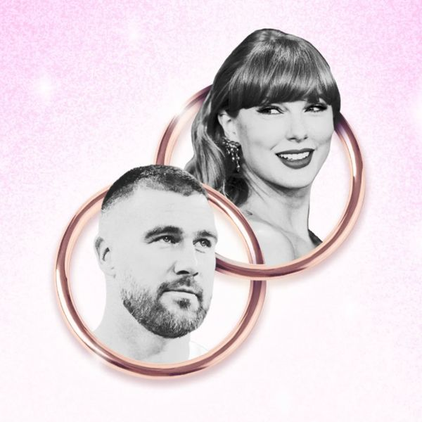

Taylor & Travis Pre Game Rundown
Show Notes
In this fun-filled episode of The Wedding Police Podcast, Penny & Jim put on their imaginary wedding planner badges and investigate the wedding that hasn't happened...yet! From Taylor Swift's dream gown to Travis Kelce's tux, they speculate on everything—including the guest list, venue, décor, flowers, menu, entertainment, and whether the reception will end with a surprise concert or a touchdown dance. They even debate the biggest question of all: Could the ceremony actually take place at Madison Square Garden? Is it the ultimate celebrity wedding venue, or would Taylor and Travis choose something far more private? Nothing is off-limits as Penny and Jim hilariously imagine every over-the-top detail of what could be the wedding of the decade. Grab your badge and join the Wedding Police for a playful investigation into the ultimate celebrity "I do"...if and when it happens!
🚨 Never Miss a Case
New episodes every week. Follow The Wedding Police so the next one lands in your feed.